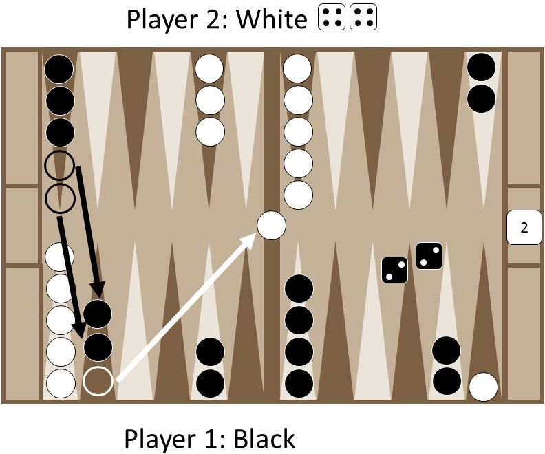

Capture
When a player lands on a space that contains one chip of the opposite player's color, the player captures that piece.
When a player captures a piece, they remove it from the board and place it between both players. The player cannot move any other chips on or off the Backgammon board until the captured chip is back in play. That means that a player can significantly hinder an opponent by preventing them from placing their chip back on the board.

The chip comes back in play in the quadrant furthest from the player's home quadrant. To bring the chip back in play, the player must roll their dice and count the corresponding number of spaces from the end of the backgammon board. If one of the spaces is open, the chip can be put back in play from that space, and the game proceeds as normal, with the player playing the other die as usual.

If both space are occupied by the opposing player's color, the player cannot place the chip in either space, and must forfeit their turn.